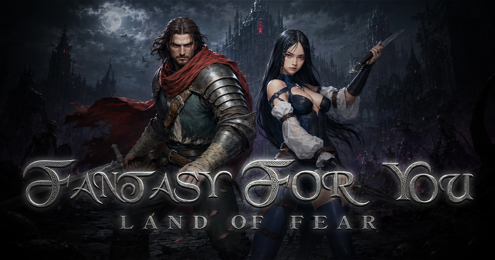
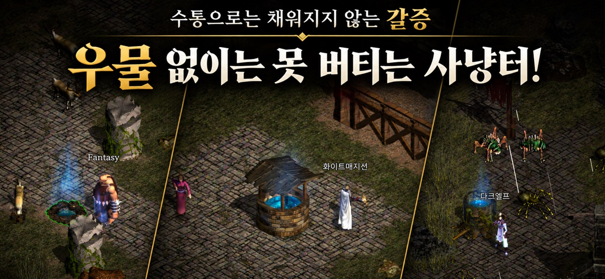
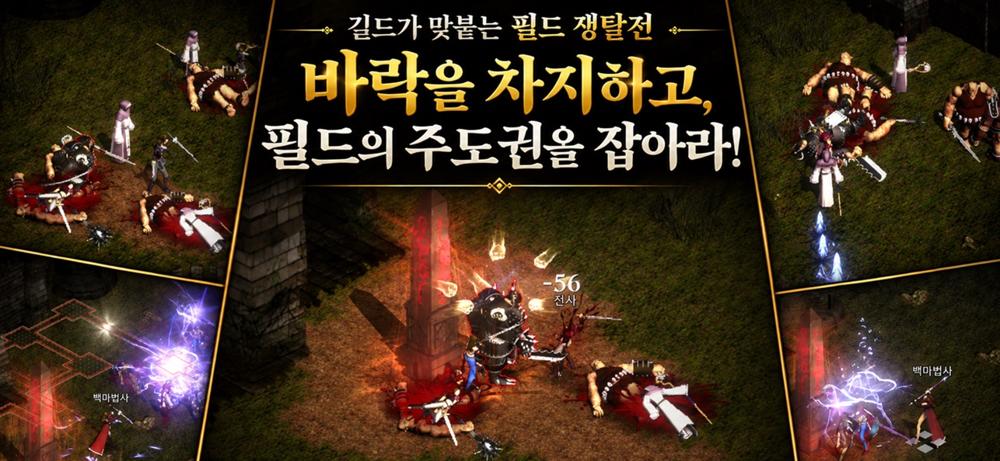
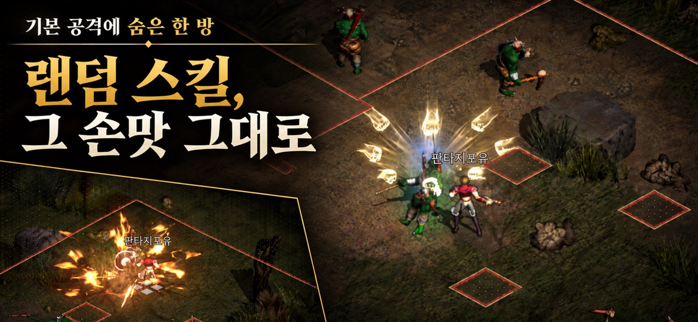
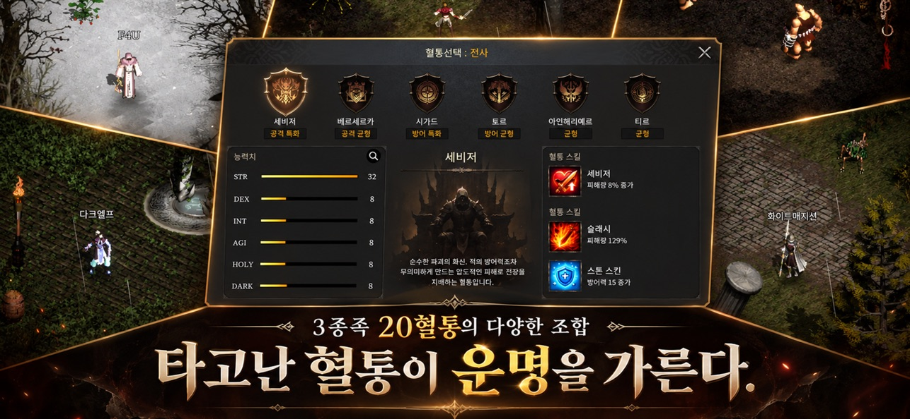

판타지포유 PC·모바일 크로스플랫폼 신작 프리뷰, 세기말 다크 판타지 우물과 바락전 랜덤 스킬 정리
※ 해당 게임은 확률형 아이템을 포함하고 있습니다.
안녕하세요, 영원한도시입니다. 슬로건부터 세기말 다크 판타지의 귀환이라고 달고 나온 게임이 있어서 가져왔어요.
1999년 PC 온라인게임으로 서비스를 시작한 '판타지포유'가 PC와 모바일 크로스플랫폼으로 돌아오는 소식이에요. 지앤아이소프트가 개발ㆍ서비스하는 판타지포유(Fantasy For You, F4U)의 사전예약 프리뷰이고, 공식 사전예약 페이지 제목에는 '다크판타지 MMORPG'라고 적혀 있습니다.

공식 홈페이지 대표 이미지, 로고 아래에 'Land of Fear'라는 부제가 붙은 컷
이미지 출처: 판타지포유 공식 홈페이지(f4u.co.kr)
스팀 소개문에는 원작이 1999년 한국에서 서비스를 시작해 대만에도 진출했고, '英雄(영웅)'이라는 이름이 병기돼 있어요. 그 시절 PC방을 기억하는 분이라면 슬로건만으로도 눈이 가실 텐데요, 이번 글에서는 사전예약 참여 방법과 보상, 그리고 공식이 전면에 내세운 우물과 바락전을 중심으로 정리해 볼게요.
1. 사전예약 방법과 보상
사전예약은 10월 7일(수)부터 공식 사전예약 페이지에서 휴대폰 번호를 등록하면 되는데요, 보상은 정식 서비스가 시작된 뒤에 받는 방식입니다. 스토어 사전등록은 구글 플레이ㆍApp Storeㆍ원스토어에서 받고, 갤럭시 스토어는 순차적으로 열린다고 보도자료에 나와 있어요. 공식 사전예약 링크는 여기입니다. https://prereg.f4u.co.kr/
사전예약 보상에 퀴즈와 직소 퍼즐 미션, SNS 공유 추첨, 월드 오픈 이벤트가 더해집니다.
| 구분 | 참여 방법 | 보상 |
|---|---|---|
| 사전예약 보상 | 사전예약 페이지에서 휴대폰 번호 등록 | 중급 보석 11회 소환권 2개 + 성물 공명 강화석 15개 + 고급 와인 20개 |
| 퀴즈 미션 | 구글ㆍ애플 계정 로그인 후 10문항 중 무작위 3문제 | 특수 장신구 선택권ㆍ각종 강화석ㆍ100만 골드 상자 |
| 직소 퍼즐 미션 | 퀴즈 완료 후 퍼즐 3개 전부 완성 | 중급 보석 11회 소환권 2개 + 별빛 망원경 12개 + 고급 푸딩 20개 |
| SNS 공유 이벤트 | 사전예약 페이지의 SNS 공유 이벤트 참여, 추첨 | 갤럭시 버즈4 1명ㆍSK 주유권 5만 원 5명ㆍ구글 기프트카드 1만 원 10명 |
| 월드 오픈 이벤트 | 월드 오픈 후 인게임에서 닉네임 선점ㆍ길드 창설 | 우편으로 지급, 상세는 공식 라운지 공지 예정 |
표의 보상과 참여 조건은 공식 사전예약 페이지와 사전예약 보도자료를 기준으로 옮겼어요.
사전예약 페이지의 SNS 공유 이벤트 경품 패널
이미지 출처: 판타지포유 사전예약 사이트(prereg.f4u.co.kr)
보시면 경품은 패널 맨 위가 버즈4, 왼쪽 아래가 SK 주유권, 오른쪽 아래가 구글 기프트카드로 놓여 있어요. 개인적으로는 퀴즈와 직소 퍼즐이 계정 로그인으로 끝나는 구성이라 참여 문턱이 낮아 보여서 마음에 드네요.
2. 우물과 수분 시스템
판타지포유에는 일반 회복 물약이 없고, 캐릭터의 수분을 수통이나 우물로 채워야 하는 수분 시스템이 있어요. 수분 수치는 충만 → 쾌적 → 건조 → 탈진 네 단계로 내려가는데요, 단계가 낮아질수록 자연 회복률이 떨어지고 탈진 상태에서는 자연 회복이 거의 일어나지 않습니다. 수분을 채우는 수단은 세 갈래예요.
- 수통 : 등급에 따라 회복량과 보너스가 달라요
- 우물 : 수분을 최대치까지 채워 주고 자연 회복 효율도 올려 줘요
- 오염된 우물 : 우물이 더럽혀지기도 하는데, 그런 물을 마시면 중독돼요

'우물 없이는 못 버티는 사냥터!' 문구가 붙은 공식 스크린샷, 세 컷 모두 우물이 보이는 장면
이미지 출처: 공식 스크린샷(App Store 소개 이미지)
공식 홈페이지는 좋은 사냥터를 차지하려면 주변 우물부터 확인하라고 안내해요. 사냥터를 고르는 기준에 우물 위치가 들어간다는 얘기죠. 스팀 소개문에는 우물이 매일 일정량만 제공돼서 사냥터 점유 경쟁이 벌어진다고 적혀 있습니다.
CBT 보도자료에 따르면 박제홍 팀장은 물약 대신 우물을 찾아 헤매던 감각처럼 원작다움을 만든 규칙들을 테스트에 그대로 담았다고 밝혔어요.
여기서 주인장이 한 가지 짚고 싶은 게 있는데요, 옛날이 그립다고 옛날의 불편함까지 그리운 건 아니잖아요(ㅋㅋ). 물이 모자라 사냥터를 찾아다니던 맛은 추억으로 살리되, 플레이 방식은 지금 시대에 맞게 다듬어야 한다고 봅니다.
3. 바락전
바락전은 던전이 아니라 일반 필드에서 길드끼리 맞붙어 점령물인 '바락'을 차지하는 길드전이에요. 길드원이면 누구든 끼어들 수 있는 판타지포유 고유의 RvR 콘텐츠이고, 이기면 이런 걸 가져갑니다.
- 해당 필드 바락의 소유권
- 그 필드에서 떨어지는 드랍 골드의 일부를 세금으로 수령
- 연속으로 지켜 낼수록 올라가는 바락 레벨, 그리고 더 높게 정할 수 있는 세율

공식 스크린샷 문구는 '바락을 차지하고, 필드의 주도권을 잡아라!'예요, 길드끼리 필드에서 맞붙는 전투 장면입니다
이미지 출처: 공식 스크린샷(App Store 소개 이미지)
이미지를 보시면 붉은 비석 주위로 길드원들이 한데 엉켜 있고, 인스턴스 던전이 아니라 누구나 지나다니는 필드에서 벌어진다는 게 포인트예요. 필드 골드가 곧 길드 수입이 되는 구조라서, 우물 경쟁과 맞물리면 사냥터 하나하나가 길드 싸움판(?)이 될 것 같네요. 스팀 소개문은 이 바락전을 매주 필드를 지배하는 콘텐츠로 소개합니다.
4. 랜덤 스킬과 혈통
전사와 궁수는 기본 공격을 할 때 등록해 둔 스킬이 확률로 자동 발동하는 랜덤 스킬 방식이에요. 스킬마다 터질 확률이 따로 있고, 숙련도를 올릴수록 그 확률도 높아지며, 백마법사와 흑마법사는 마법과 패시브로 싸웁니다.

'랜덤 스킬, 그 손맛 그대로' 문구와 '기본 공격에 숨은 한 방' 소개가 붙은 공식 스크린샷
이미지 출처: 공식 스크린샷(App Store 소개 이미지)
공식이 이 스킬 방식에서 내세우는 건 변화보다 '그 손맛 그대로'라는 문구인데요, 화면 오른쪽처럼 기본 공격 한 번에 이펙트가 터지는 맛을 살렸다는 소개로 읽혔습니다.
혈통은 3종족에 전사ㆍ궁수ㆍ백마법사ㆍ흑마법사 직업군이 있고, 스토어와 보도자료 기준으로 20혈통이에요. 전사만 해도 세비져ㆍ베르세르카ㆍ시가드ㆍ토르ㆍ아인헤리에르ㆍ티르 여섯 가지가 공격 특화ㆍ공격 균형ㆍ방어 특화ㆍ방어 균형ㆍ균형으로 나뉩니다.

전사 혈통 선택 화면, 세비저는 STR 32의 공격 특화 혈통으로 표시돼 있어요
이미지 출처: 공식 스크린샷(App Store 소개 이미지)
선택 창을 보시면 세비저의 혈통 스킬 칸이 이렇게 표시돼요(공식 스크린샷 기준).
- '세비저' : 피해량 8% 증가
- '슬래시' : 피해량 129%
- '스톤 스킨' : 방어력 15 증가
5. BM과 출시 일정, 공개된 내용
판타지포유는 무료로 시작하는 게임이고, 공식 스토어 표기로 확인되는 건 확률형 아이템이 있다는 점까지예요. 스팀은 인게임 구매와 확률형 인게임 구매를, App Store는 무료 앱에 랜덤 박스 포함을, 구글 플레이는 인앱 구매를 표기하고 있고, 장비 강화에는 운이 개입한다고 App Store 소개 문구에 나옵니다. 공식 홈 설명에는 '그때 그 감성은 그대로, 부담은 가볍게'라는 문구가 있어요.
| 구분 | 표기 | 출처 |
|---|---|---|
| CBT | 2026.09.15 ~ 09.18 (종료) | 공식 홈 로드맵 |
| 사전예약 | 10월 7일(수) 시작, 종료일은 '사전예약 종료 시까지'(미정) | 공식 라운지 공지 |
| 정식 출시 | 일정 추후 공개 | 공식 홈 로드맵 |
| 정식 출시 예정 | 2026년 10월 30일 (무료) | App Store |
| PC | Free To Play, 2026년 하반기 출시 예정 | 스팀 |
확인하지 못한 부분을 모으면, 공식 홈과 App Store의 출시일 표기가 서로 달라서 정식 출시일은 공식 공지가 나올 때까지 단정하기 어렵고, 사전예약 종료일도 '종료 시까지'로만 공개돼 있으며, 상점 구성ㆍ가격ㆍ확률 공시는 공개된 자료가 없고 바락전의 참가 인원ㆍ시간대ㆍ세율은 공식 홈ㆍ스토어ㆍ라운지 공지에서는 찾지 못했어요. '부담은 가볍게'라는 문구가 실제 BM에서 어떤 모습일지는 정식 출시 뒤 직접 보고 판단해야 합니다.
자주 묻는 질문
Q. 사전예약 보상은 바로 들어오나요?
아니요, 정식 서비스 이후에 지급되는 방식이라 예약만으로 당장 받는 건 없어요.
Q. PC에서도 사전예약을 할 수 있나요?
PC만 따로 받는 사전예약은 없고, 공식 사전예약 페이지에서 전화번호로 사전예약하면 PC 버전 오픈 소식도 문자로 안내해 준다고 해요. 스팀에서는 찜 목록에 넣어 두면 되고, 스팀 페이지 설명에는 2026년 하반기 출시 예정으로 적혀 있습니다.
Q. CBT에서 만든 캐릭터는 정식 서비스에서 이어지나요?
아니요, 공식 안내상 CBT 종료와 함께 인게임 이벤트 보상까지 포함한 모든 데이터가 초기화됐어요. CBT 보도자료에 따르면 모바일만 대상이었고 PC는 빠졌으며, 사전 신청 없이 원스토어 베타게임존에서 참여하는 방식이었습니다.
Q. 판타지포유는 몇 살부터 할 수 있나요?
만 19세 미만은 이용할 수 없는 19세 이용가 게임이에요. 운영은 지앤아이소프트(주)가 맡고 있습니다.
참고한 곳 (2026-10-14 기준)
· 판타지포유 공식 홈페이지
· 판타지포유 공식 사전예약 페이지
· 사전예약 보도자료
· CBT 보도자료
· 판타지포유 App Store 페이지
· 판타지포유 스팀 스토어 페이지
· 공식 라운지 사전예약 시작 공지
· 공식 라운지 CBT·이벤트 공식 브리핑 #06